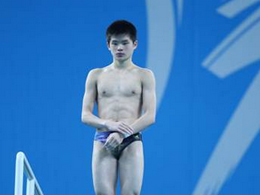
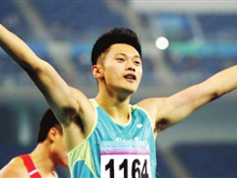
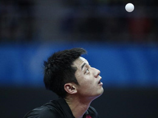
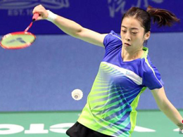
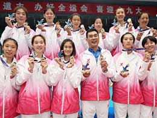
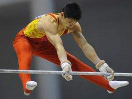
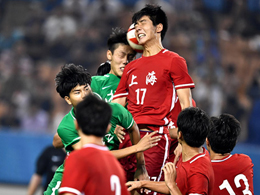
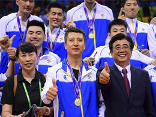

全运新闻
水上运动 更多>>
老将发挥稳定 新星积极赶超—全运跳水项目综述

中国跳水队梦之队一直处于世界领先的位置，因而全运会想拿到跳水项目金牌的难度不亚于世锦赛和奥运会...... [详细]
- 数据显孙杨成全运人气王 身体力行成功推广游泳 2017-09-15
- 从全运会眺望东京奥运跳水：新秀犹如雨后春笋 2017-09-08
- 从全运会眺望东京奥运游泳：名将稳定 新人可期 2017-09-08
- 加冕“多金王” 孙杨成全运会“最亮的那颗星” 2017-09-08
- 神一般存在的孙杨6金1银实力体现 交完美答卷2017-09-08
- 游泳收官：孙杨揽6金傲视群雄 刘湘自由泳夺冠 2017-09-08
- “女神”夺金牌梨花带雨 刘湘两度打破亚洲纪录 2017-09-08
- 天津名将李响加盟津豫粤队游泳获银牌 难能可贵 2017-09-08
- 全运会独揽6金1银 孙杨：我想做的事一定能做到 2017-09-08
田径 更多>>
从全运会眺望东京奥运田径：群星闪耀 大有可期

以男子跳远为例，前四名的成绩全部达到8米，这无疑是全运会历史上水平最高的一次…… [详细]
- 全运会新“中国飞人”诞生 改革举措成赛场亮点 2017-09-08
- 7日综述：孙杨“六金王” 张培萌告别如愿夺冠2017-09-08
- 4×100米夺冠 吴智强强势起跑 张培萌完美谢幕2017-09-08
- 男子4×100米接力：张培萌谢幕 谢震业获三金2017-09-08
- 全运男子50公里竞走角逐 天津小将罗东坡摘铜 2017-09-08
- 不舍挥别田径赛道 张培萌：2020还有复出的可能 2017-09-08
- 百米接力京浙鄂粤队夺冠 苏炳添全运接力三连冠 2017-09-08
- 男子4X100米决赛 张培萌：不想说是最后的合作 2017-09-08
- 4×400米天津再添一金 津门小将白家睿收获金牌 2017-09-08
乒乓球 更多>>
全运会频频失利 张继科“全满贯”路上最大的坎

在6日结束的第十三届全国运动会乒乓球男子单打决赛中，马龙4-2樊振东，成功卫冕…… [详细]
- 全运6日回顾：丁宁成就全满贯 刘湘破亚洲纪录2017-09-08
- 马龙再给樊振东上了一课 首位蝉联卫冕创造历史 2017-09-08
- 丁宁首夺女单冠军 距离“全满贯”只差亚运冠军2017-09-08
- 北京乒球两将封王封后 有些东西比金牌更重要 2017-09-08
- 马龙透露全运决赛前睡不好觉 盛赞武清体育中心2017-09-08
- 四年前故事再上演 樊振东：不放弃战胜马龙的心 2017-09-08
- 马龙4-2樊振东卫冕男单冠军 成地表最强第一人 2017-09-08
- 单打冠军+全满贯 丁宁：感谢自己那颗必胜的心2017-09-08
- 屈居亚军难掩失落 刘诗雯：盼望能挖掘更多潜力 2017-09-08
羽毛球 更多>>
王适娴：从惊喜中脱颖而出 在遗憾中结束比赛

7日，全运会羽毛球女单决赛落下帷幕，名将王适娴以0：2不敌19岁的国羽“小花”陈雨菲……[详细]
- 全运会羽毛球项目收官 男双/女双金牌各有归宿 2017-09-08
- 傅海峰遗憾退役：没拿过全运金牌但仍是传奇 2017-09-08
- 铁汉也有柔情 林丹铸四连冠伟业：想回家抱儿子 2017-09-08
- 林丹2：0完成“四连冠”壮举 坦言赛前压力很大 2017-09-08
- 老将傅海峰遗憾退役：没拿全运金牌 但仍是传奇 2017-09-08
- 全运会羽毛球男单迎新老对决 林丹冲击四连冠 2017-09-08
- 天津全运会今闭幕 竞技赛场、群众舞台各领风骚 2017-09-08
- 张楠/傅海峰止步四强 洪炜/柴飚进军十三运决赛 2017-09-08
- 英雄暮年仍难圆梦 傅海峰：无法用语言表达心情2017-09-08
排球 更多>>
全运排球综述：老牌劲旅有突破 后备力量展实力

天津全运会男、女排成年组和21岁以下小年龄组无疑是对全国各地方排球队和后备梯队的全面检阅...... [详细]
- 天津青年女排话别离 陈友泉：她们将撑起一片天2017-09-08
- 天津青年女排自由人孟子旋：传承精神 期待表现2017-09-08
- 李盈莹助天津青年女排夺冠 17岁小将想为国效力2017-09-08
- 全运收官日 天津青年女排3-1逆转辽宁首度加冕 2017-09-08
- 懂生活 爱拼搏 年轻生力军开启中国男排新时代2017-09-08
- 天津队横扫对手挺进决赛 青年女排与辽争夺冠军 2017-09-08
- 拥有超出同龄人实力 李盈莹：感谢教练队友提醒 2017-09-08
- 主动出击“先手”策略 天津青年女排进全运决赛2017-09-08
- 天津青年女排直落三局击败山东 决赛对阵辽宁队 2017-09-08
体操 更多>>
全运会体操收官：张成龙单杠封王 替补小花夺冠坎

第十三届全运会体操比赛7日在天津海河教育园体育中心决出最后5个单项冠军…… [详细]
- 体操众小将孕育新希望 备战东京尚需全方位提升 2017-09-08
- 带伤出战展现极佳爆发力 王妍：夺冠赢在坚持 2017-09-08
- 冠军张成龙：体操给了我太多 但终有离开的日子2017-09-08
- 体操收官张成龙单杠摘金 商春松0奖牌告别全运2017-09-08
- 以正常心态面对比赛 穆济勒：努力了就没有遗憾2017-09-08
- 天津常有“吊环王” 自由体操冠亚军开辟新强项 2017-09-08
- 人帅话不多 天津代表团斩获男子自由体操的金牌 2017-09-08
- 世界冠军范忆琳：世锦赛做好自己 参加东京奥运2017-09-08
- 广东张梦宇获女子跆拳道67公斤级冠军 首战夺金 2017-09-08
足球 更多>>
十三运会20岁以下男足决赛 上海点球大战胜浙江

9月7日晚，第十三届全运会U20(20岁以下)男足决赛在浙江队和上海队之间进行，场上......[详细]
- 全运会男足u20落下帷幕 上海独得四块足球金牌 2017-09-08
- 决赛1比5惨败上海队脚下 天津女足年轻没有失败 2017-09-08
- 天津女足虽拼尽全力仍负于上海队 未来值得期待 2017-09-08
- 上海女足终圆梦5：1力克天津队当之无愧得冠军2017-09-08
- 与金牌擦肩而过 天津女足征战全运历史最好成绩2017-09-08
- 天津女足与金牌擦肩而过 韩鹏：再年轻点就好了 2017-09-08
- 成年女足上海5-1天津夺冠 创全运决赛最大分差 2017-09-08
- 全运为新将提供锻炼舞台 中国足球希望之火续燃 2017-09-08
- 女足任桂辛第一次代表天津参赛 不想再留下遗憾2017-09-08
篮球 更多>>
郭士强：全运会已经过去 争取再创辽篮CBA历史

全运夺冠之后，辽篮下个目标就是新赛季CBA联赛的总冠军，郭士强直言…… [详细]
- 全运会男篮成年组落幕 辽宁队战胜新疆夺取冠军2017-09-08
- 全运会男篮成年组 新疆队战胜卫冕冠军挺进决赛 2017-09-08
- 全运会男篮成年组 辽宁大比分战胜上海闯入决赛 2017-09-08
- 希望再夺一冠就退役的“玄冥二老” 谢幕不悲情2017-09-08
- 广东代表团6日进3金 女篮皮划艇跆拳道齐发威2017-09-08
- 全运会成年男篮 辽宁队大胜东道主天津晋级四强2017-09-08
- 全运女篮广东实现历史突破 终结解放军队8连冠 2017-09-08
- 结果不能代表一切 教练李红媛：不输20分就是赢 2017-09-08
- 赵睿揭秘为何代表天津战全运：还缺少一些默契2017-09-08
网球 更多>>
- 彭帅：中国网球进步 本土优秀教练缺乏影响发展2017-09-08
- 网球男单三连冠得主吴迪 全运霸主盼大满贯圆梦2017-09-08
- 获得亚运会全运会双冠 王“美蔷”升级“最蔷”2017-09-08
- 王蔷艰难获胜摘女单金牌 张帅遗憾告负泪洒赛场 2017-09-08
- 全运会网球女单王蔷夺冠 张帅憾失金牌泪洒赛场 2017-09-08
重竞技 更多>>
- 从全运会眺望东京奥运举重：后备力量实力不足2017-09-08
- 摔跤收官日“闪电战”成主题 3场决赛仅用1分钟 2017-09-08
- 全运会国际式摔跤收官！山东包揽4金成最大赢家 2017-09-08
- 女子自由式摔跤收官 19岁新星裴星茹夺冠 2017-09-08
- 全运男子举重：老将执着坚守 中生代渐成主力 2017-09-08
手曲棒垒 更多>>
- “90后”小伙儿给力 男子曲棍球结束天津夺铜牌2017-09-08
- 全运江苏夺冠！女子手球赶超日韩有望亚洲登顶 2017-09-08
- 全运会男子曲棍球 辽宁“点杀”内蒙古豪取四连冠 2017-09-08
- 全运男曲辽宁胜内蒙古夺冠 东道主天津斩获铜牌 2017-09-08
- 焦益第三次率队夺得全运金牌 希望走进基层棒球2017-09-08
武术 更多>>
- 奥运冠军郑姝音 全运赛场上成功卫冕跆拳道冠军2017-09-08
- 赵帅现场指导 郑姝音卫冕：我从来不摸他的金牌2017-09-08
- 从篮球跨界跆拳道！新疆小伙全运大级别夺冠 2017-09-08
- 17比0！全运会跆拳道郑姝音大比分获胜挺进8强 2017-09-08
- 国际式摔跤摘得银牌 新疆小伙梦想代表国家出战 2017-09-08
射击射箭马术 更多>>
- 从全运会眺望东京奥运射击：中国枪手 有望雪耻2017-09-08
- 全运会马术比赛收官 中国马术运动“奥运之困” 2017-09-08
- 三朝老将李静敏：每天花在马上时间长达十小时 2017-09-08
- 广东梁锐基豪取四金：感谢赛事提高马术关注度 2017-09-08
- 全运马术落幕 广东包揽全部六金实现“大满贯” 2017-09-08
自行车击剑 更多>>
- 全运女子公路个人赛完赛 辽宁队孙佳君顺利摘金 2017-09-08
- 赛场上“勇者荣耀” 自行车车手董晓勇不舍退役2017-09-08
- 公路自行车男子个人赛结束 山东马光通惊险夺冠 2017-09-08
- 19岁天津选手史航夺取冠军 每年骑行四万公里 2017-09-08
- 从业余到全运会冠军 自行车小将史航仅用了四年 2017-09-08
高尔夫 更多>>
- 广东男女队获得二三名 流动性激活全运会高尔夫 2017-09-08
- 梁文冲：中国最强的高尔夫选手会出现在00后中 2017-09-08
- 十三运高尔夫球测试赛打响 记者高球场地新探 2017-09-08
- 盘山整装待发迎全运：高尔夫球测试赛拉开战幕 2017-09-08
- 何沐妮获中巡最佳战绩 有望全运会代表广东出战 2017-09-08
轮滑冰球 更多>>
- 全运轮滑冰球落幕 黑龙江胜北京夺得男子组金牌2017-09-08
- 轮滑冰球天津男队3:4憾负内蒙古 最终位列第五 2017-09-08
- 北京队：赢河北尚在掌握中 战黑龙江仍要靠经验 2017-09-08
- 北京队赢全运会轮滑冰球焦点战 决赛PK黑龙江队 2017-09-08
- 轮滑冰球名次赛角逐依旧激烈 黑龙江北京将争冠 2017-09-08
本网站由中华人民共和国第十三届全运会组织委员会主办 北方网承办 津ICP备08001569号-3